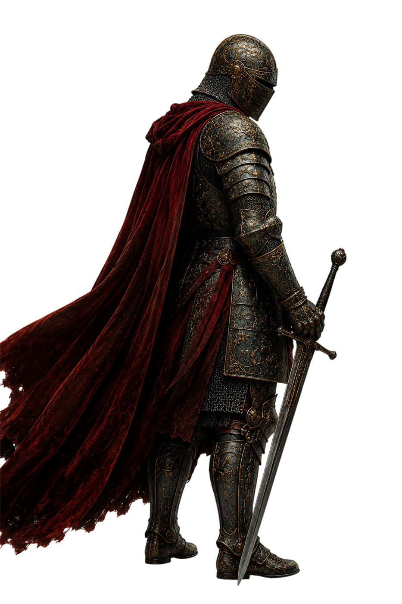

Exercício Prático
Pilar II
A Escolha
da Parceira
Escolher bem não é encontrar alguém perfeito.
É entender se existe compatibilidade para construir uma vida real.
Uma escolha errada pode desgastar anos da vida de um homem.
Uma escolha bem feita pode se tornar a base de uma família forte.
 Pilar II — A Escolha da Parceira
Pilar II — A Escolha da Parceira
Depois de construir a própria estrutura, o próximo passo é aprender a escolher com consciência. Uma escolha errada pode desgastar anos da vida de um homem. Uma escolha bem feita pode se tornar a base de uma família forte, de uma construção sólida e de um legado real.
Este exercício foi criado para dois momentos diferentes. O primeiro é para o homem solteiro, que ainda está entendendo que tipo de mulher realmente faz sentido para sua vida. O segundo é para o homem que já está em um relacionamento e precisa avaliar, com maturidade, se existe compatibilidade real.
Não responda com pressa. Escolha no mínimo 5 perguntas que façam sentido para o seu momento atual, escreva as respostas no seu caderno e revise essas respostas ao longo dos próximos dias. O ideal é dedicar pelo menos duas semanas a este exercício antes de avançar para o próximo pilar.
Seção I
Para Homens Solteiros
Essas perguntas existem para que você se conheça melhor antes de tentar escolher alguém. Muitos homens não sabem o que procuram em uma mulher porque nunca pararam para entender quais valores, comportamentos e posturas realmente importam para a vida que desejam construir.
Escolha no mínimo 5 perguntas abaixo e responda com sinceridade no seu caderno.
Ao responder essas perguntas, você começa a enxergar com mais clareza quais características realmente são importantes em uma mulher. Isso evita que você escolha apenas por atração, carência, aparência ou emoção momentânea.
Pilar II — A Escolha da Parceira
Seção II
Para Homens em Relacionamento
Se você já está em um relacionamento, este exercício deve ser feito em duas etapas. Primeiro, responda sozinho. Depois, faça essas perguntas para sua parceira também. O objetivo não é criar discussão, testar a pessoa ou procurar defeitos — é conhecer com mais profundidade os valores, expectativas e visão de futuro de cada um.
Escolha no mínimo 5 perguntas abaixo e responda no seu caderno.
Depois de responder sozinho, converse com sua parceira sobre as perguntas escolhidas. Se aparecer algum conflito nas respostas, não ignore — esse é o momento de fazer um alinhamento de expectativas, sentar, conversar e entender o que precisa ser ajustado.
Conclusão
Escolher bem não significa encontrar alguém perfeito. Significa entender se existe compatibilidade suficiente para construir uma vida real. Valores, visão de futuro, maturidade emocional e disposição para crescer juntos importam muito mais do que intensidade inicial.
Use este exercício com seriedade. Ele pode revelar pontos que você vinha ignorando, confirmar compatibilidades importantes ou mostrar desalinhamentos que precisam ser conversados antes de se tornarem problemas maiores.
Queremos conversar pessoalmente com cada homem em construção que conseguir chegar ao final dos pilares com o caderno completo. Então não negligencie essa etapa. Ela é parte da sua construção.